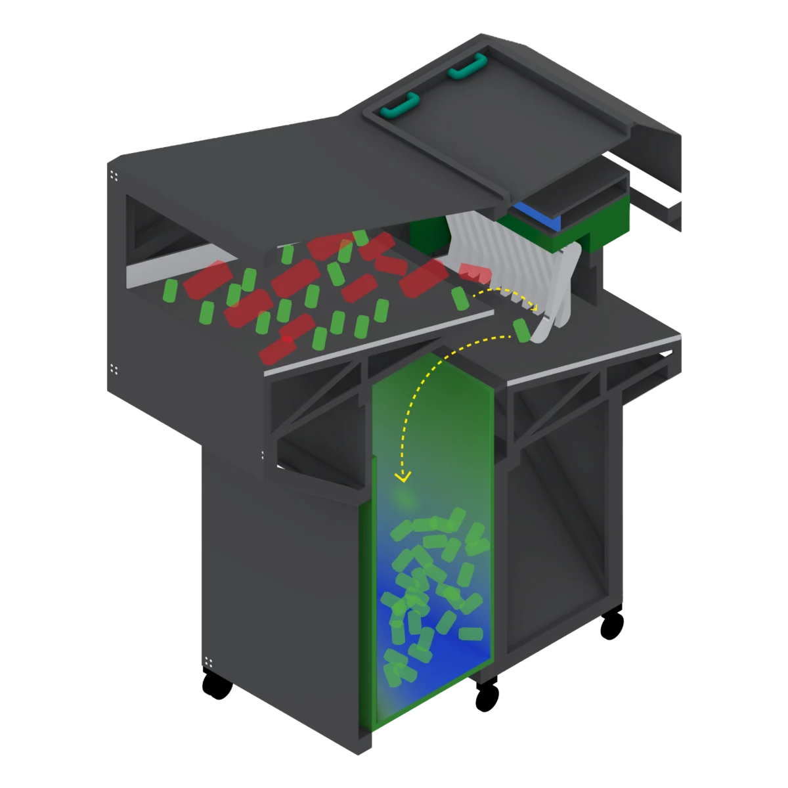
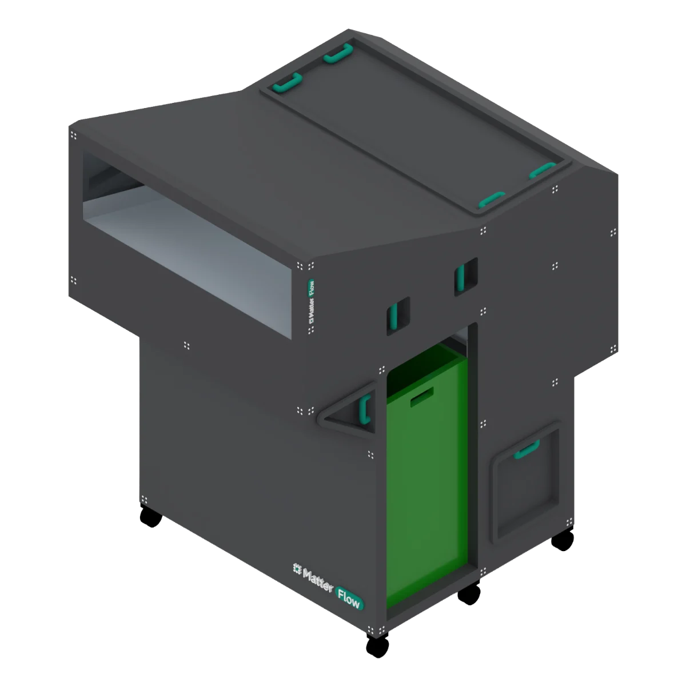
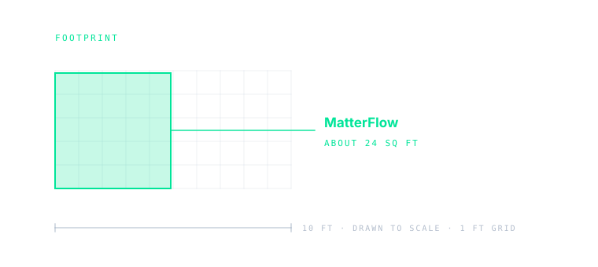
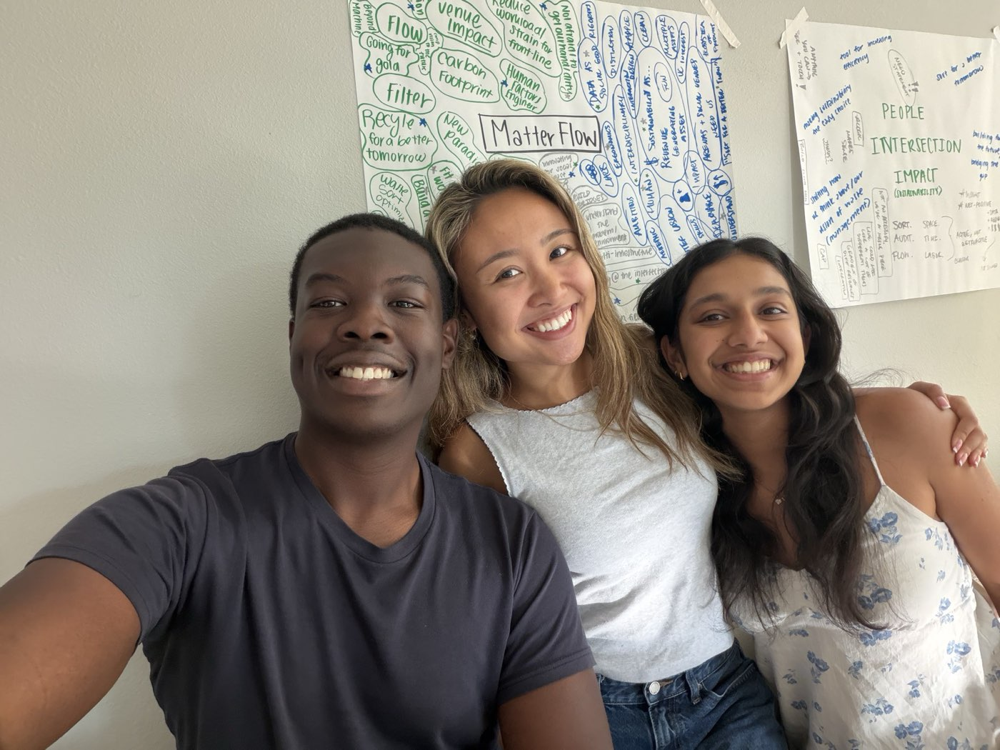

Space.
About twenty-four square feet inside the back-of-house area a venue already has. Not a new sorting floor.
On-site waste automation for venues
Sort. Audit. Flow.

01Mission
MatterFlow builds alongside the people who keep live events running, from operations leads to the crews on the line. We sort what can be recovered, audit everything that passes through, and let it flow back into the systems venues already run. We start with aluminum, because crews already pull it first and it can be recycled indefinitely. By bridging the gap between people, technology, and sustainability, we make recovery the logical choice for every venue and the crews and operations teams who keep it running.
02The problem
Bags arrive at the dock faster than anyone can work through them. A crew sorts by hand, against the clock, in a room that was never designed to grow.
With the 2028 Games coming to Los Angeles, venue waste volumes and scrutiny are about to grow.
Image 01 · to come
A packed concourse emptying after the final whistle, bins overflowing.

Image 03 · to come
Mixed bags going straight into a landfill compactor at the end of a shift.

Image 05 · to come
Recovered aluminum leaving the dock, binned and ready for pickup.
03How it works
A Gravity Chute, an on-device Vision Head, and a Paddle Kick. It sits in the back-of-house area a venue already has and takes the first, most repetitive pick off the crew. Everything else keeps moving through the line they already run.
The crew feeds bags into the Gravity Chute as they come off the floor. Nothing is asked of fans.
Items slide past the Vision Head. An on-device model classifies each one in motion.
ID: YES ID: NO
The Paddle Kick diverts aluminum into the Collection Bin.
Everything else continues to the existing line for the crew.
Every decision is recorded and becomes the venue's audit record.
04Waste auditing
Auditing is as central as sorting. Every item that passes the Vision Head is logged, so each event ends with a record of what came in and where it went, not just a hauling bill.
Venue audit Sample event
Illustrative sample data, not results
Real figures come from the Oct to Nov 2027 pilot.
Diversion rate (whole event)
38.0%
Labor hours returned
42h
Sorting time saved
9.5h
Items logged
61,240
1 audit report
Energy used
18kWh
Stream composition
Decision log
| Time | Item | Decision |
|---|---|---|
| 22:41:07 | Can, aluminum | ID: YES |
| 22:41:07 | Cup, plastic | ID: NO |
| 22:41:08 | Can, aluminum | ID: YES |
| 22:41:08 | Tray, paper | ID: NO |
Image A · to come
A TRUE or LEED certification report open on the operations desk.
Image B · to come
A venue sustainability report open to its waste section.
Image C · to come
An operations lead planning next event's staffing and hauling at the dock.
Image D · to come
Public attention on venue waste: a city meeting or news coverage.
05What changes
About twenty-four square feet inside the back-of-house area a venue already has. Not a new sorting floor.
The first pass runs at machine speed instead of hand speed, so the dock clears sooner.
Crews stay on the line with less repetitive picking. Their time moves to the calls that need judgment.
Target: take a full day out of the post-event sort.
This is the goal the system is designed against. It is a target, not a result. The Coliseum pilot is where it gets measured.

06Pilot venue
MatterFlow exists because of what we found at the Los Angeles Memorial Coliseum. We spent our discovery there, in back of house during load-out, working alongside the crews who move the waste. The product is shaped by what that showed us.
The Coliseum is our target pilot venue, and the system is being developed with its operations team. One venue, in depth, before anything else.


07Where we're going
In five to ten years, we want MatterFlow to be the standard back-of-house waste layer for venues of every size, from fully resourced arenas to bare-bones operations. Around the machine sits an ecosystem. A venue can start with one piece and grow into the rest.
The unit on the line, starting with aluminum and adding streams as each one pays for itself.
The computer vision model behind the sort, licensable on its own.
Item-level auditing as a standalone service.
Every event turned into a measurable record.
The goal is to shift how operators think about waste: from a cost they haul away to a process they can measure and improve.
08Core team

Chief Executive Officer

Chief Operating Officer

Chief Technology Officer
09Careers

We're setting up fellowship-based roles. Details are still being worked out, and they'll be announced here first.
In the meantime we'll read anyone who gets in touch. We're especially keen to hear from people working in hardware, computer vision, sustainability, and operations, but if your background sits outside that list and you think you belong here, say so.
10Contact
Partnerships, venues, press, or anything else. One inbox, and we read all of it.
team@matterflow-usa.com